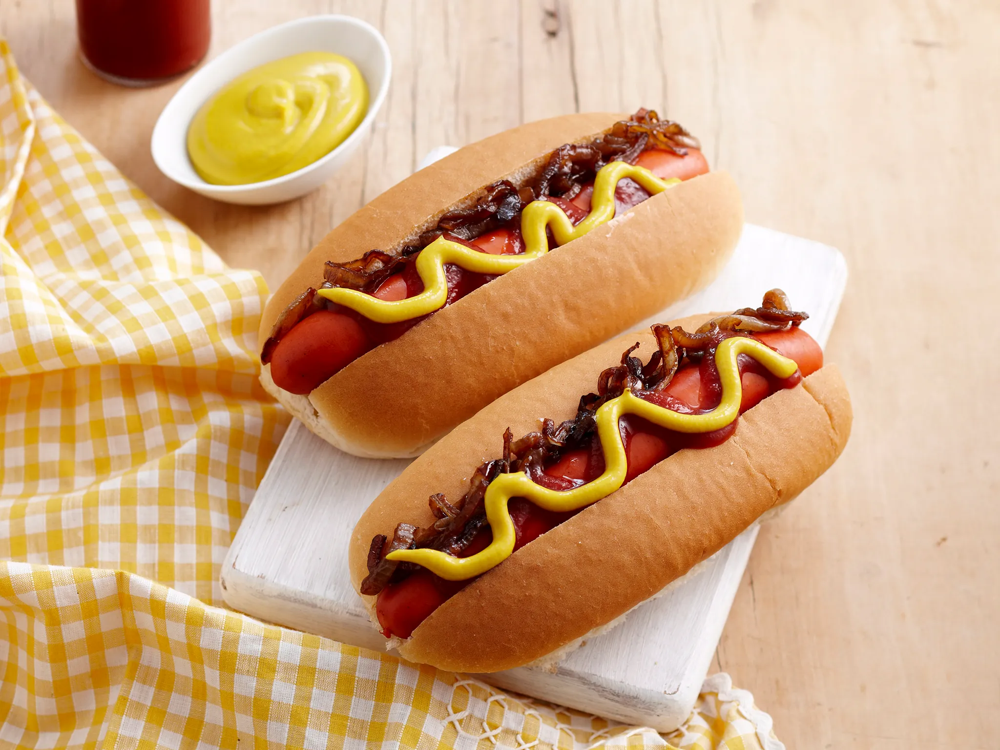

HOT DOGS RECIPE

Ingredients:
- Hot dog sausages: 4
- Hot dog buns: 4
- Mustard: as needed
- Ketchup: as needed
- Relish: as needed
- Chopped onions: as needed
- Sauerkraut: as needed
- Any additional preferred toppings
Method:
- Preheat a grill or skillet over medium-high heat.
- Cook the hot dog sausages on the grill or skillet, turning occasionally, until they are browned and heated through.
- Meanwhile, lightly toast the hot dog buns on the grill or in a toaster.
- Place the cooked sausages into the toasted buns.
- Add desired condiments and toppings such as mustard, ketchup, relish, chopped onions, sauerkraut, or any other preferred toppings.
- Serve the hot dogs immediately while they're warm and enjoy!
Hot Dogs are Ready to Enjoy!!!